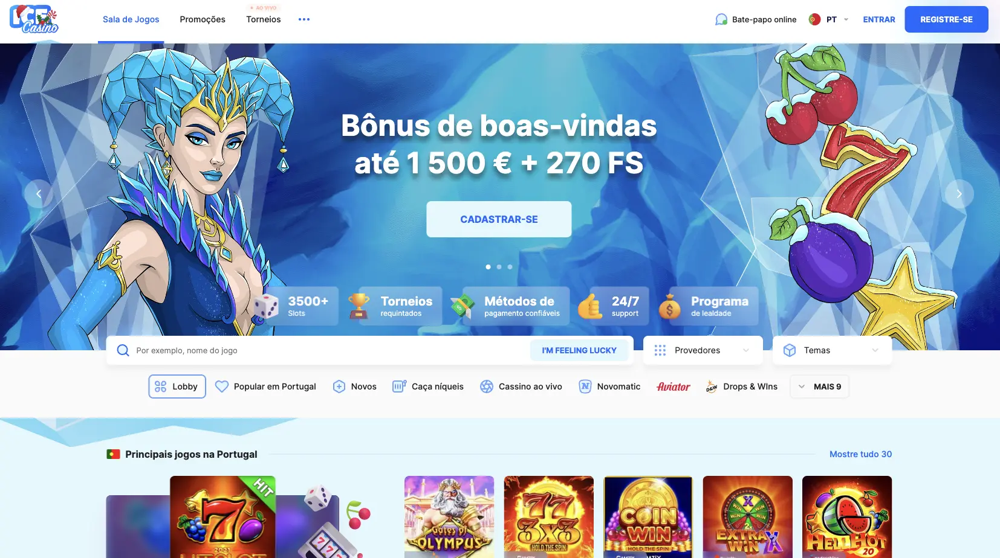
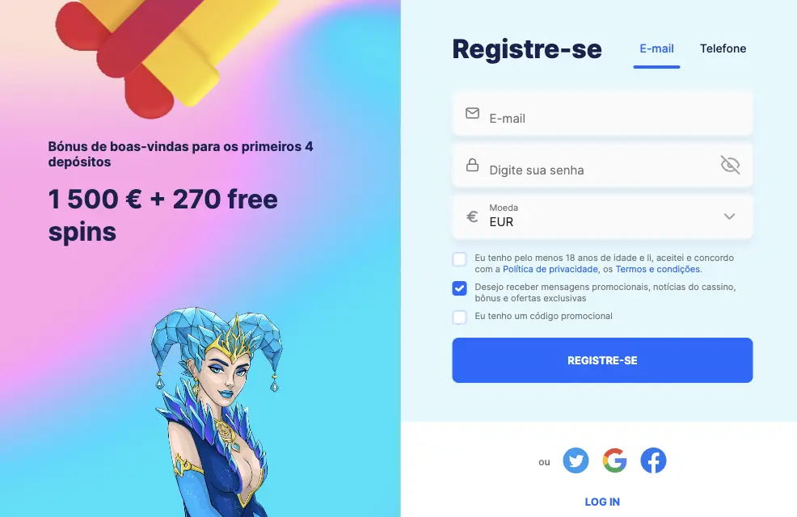
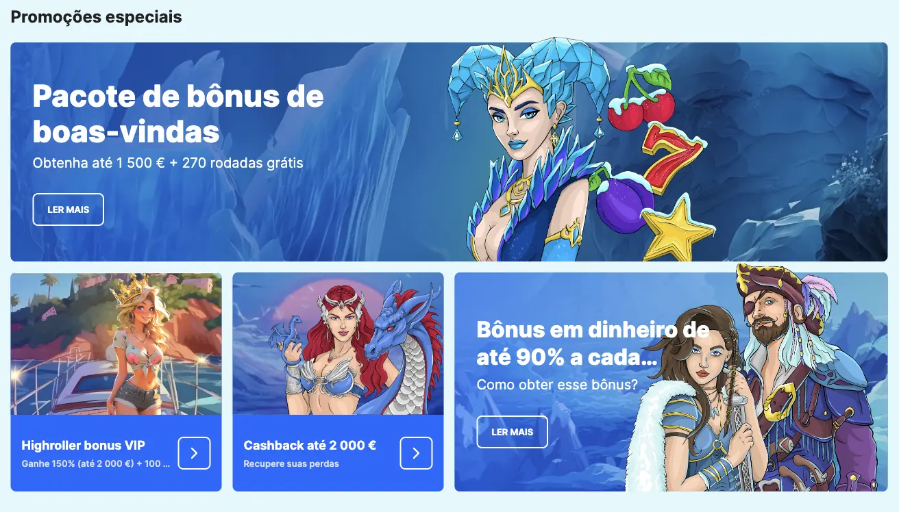
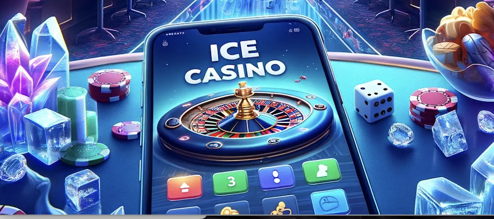

Ice Casino Portugal Review
O Ice Casino conquistou rapidamente a popularidade entre os entusiastas de casinos online portugueses, oferecendo uma experiência de jogo emocionante aliada a uma variedade grande de jogos. O Ice Casino Portugal é conhecido pela sua seleção diversificada de jogos, bónus atraentes e uma interface amigável e fácil de utilizar, o Ice Casino tornou-se na escolha principal para jogadores que procuram uma experiência envolvente e divertida nos jogos de casino online em Portugal.
Tabela de Informações:
|
Aspecto |
Detalhes |
|
Ano de Fundação |
2022 |
|
Licença |
Curaçao |
|
Idioma |
Português |
|
Tipos de Bónus Oferecidos |
Bônus de boas-vindas, jogadas grátis, recompensas de fidelidade |
|
Opções de Depósito e Levantamento |
Visa, Mastercard, Tele2, Google Pay, Apple Pay, Beeline, Piastrix, Neosurf, Interac etc. |
|
Moedas Aceitas |
Euro (EUR) |
|
Depósito Mínimo |
€10 |
|
Tipos de Jogos Disponíveis |
Slots, Jogos de Mesa, Jogos com Dealer ao Vivo, Jackpots |
|
Empresas de Software |
BetSoft, ELK Studios, iSoftBet, NetEnt, Quickspin, Play’N Go |
|
Aplicação móvel |
Sim |
|
Suporte Técnico |
Chat ao Vivo, E-mail |
O Ice Casino continua a atrair jogadores portugueses com seu o compromisso com o jogo justo, um ambiente de jogo seguro e uma infinidade de recursos emocionantes. Explore as diversas opções de jogos e bónus generosos no Ice Casino Portugal para uma experiência de casino online incomparável.
O Ice Casino é confiável?
O Ice Casino é confiável para os jogadores em Portugal, graças à sua legalidade e licenciamento pela Autoridade Reguladora de Jogos de Azar de Curaçao. A prioridade da plataforma é a segurança, empregando avançados protocolos de proteção de dados e criptografia para garantir transações seguras.
Para além disso, o casino utiliza ainda software licenciado de renomadas empresas como NetEnt, Microgaming, Play'n GO e Evolution Gaming, que são líderes globais na indústria do jogo.
A transparência nos pagamentos é uma outra característica em que o Ice Casino é confiável, com políticas claras sobre depósitos e levantamentos. Os jogadores podem confiar na eficiência do processamento de pagamentos, assegurando transações rápidas e seguras.
Os jogadores têm sempre disponíveis canais de comunicação eficientes, como chat ao vivo e e-mail, para responder a todos os pedidos de contacto e para garantir uma experiência de jogo sem contratempos.
Como Iniciar Sessão no Ice Casino
Para iniciar sessão no Ice Casino:
- Visite o website oficial
- Ice Casino e clique em "Entrar" ou "Registre-se" no canto superior direito.
Os novos utilizadores preenchem um formulário com informações pessoais, tais como nome, e-mail e data de nascimento. Escolha um nome de utilizador único e uma palavra-passe segura para futuros acessos.
Qualquer pessoa com idade acima de 18 anos e residente em Portugal se pode registar no Ice Casino.
Os benefícios do registo incluem acesso total à vasta gama de jogos, participação em promoções e programas de fidelidade, além da oportunidade de jogar com dinheiro real utilizando as opções de pagamento seguras. Para uma experiência de jogo envolvente e segura, o registo no Ice Casino é o primeiro passo, permitindo aos jogadores explorar emocionantes opções de entretenimento online.
Além disso, após o registo bem-sucedido, os utilizadores podem aproveitar uma experiência personalizada, com a possibilidade de configurar preferências de conta, definir limites de jogo responsável e acompanhar o histórico de transações.
Concluindo, iniciar sessão no Ice Casino não apenas desbloqueia o acesso a uma variedade de jogos emocionantes, mas também oferece uma plataforma personalizada, segura e orientada para o entretenimento responsável.
Ice Casino Portugal login: Como aceder ao site
Passo 1: Dirija-se ao website do Ice Casino inserindo na barra de endereços do seu navegador ou clicando no link fornecido nos botões superiores da nossa página de análise para um acesso facilitado.
Passo 2: Clicar em "Iniciar Sessão" ou "Registe-se":
Ao estar na página inicial, clique no botão "Entrar" ou "Registe-se" se ainda não possuir uma conta. Estes botões estão geralmente localizados no canto superior direito.
Passo 3: Os utilizadores existentes devem introduzir o seu nome de utilizador e a palavra-passe registada.
Passo 4: Após iniciar sessão com sucesso (Ice Casino Portugal login), os utilizadores terão acesso às suas contas pessoais. Aqui, podem gerir preferências, visualizar histórico de transações, definir limites de jogo responsável e explorar outras funcionalidades personalizáveis.
Adicionalmente, para garantir uma experiência suave, abordamos problemas comuns. Se esqueceu a palavra-passe, utilize o link de recuperação por e-mail. Em caso de conta bloqueada, contacte o suporte via chat ao vivo ou e-mail. Problemas técnicos podem ser resolvidos com uma ligação estável e, se necessário, limpando o cache do navegador.
Ativação e cancelamento da conta
Após o registo no Ice Casino, poderá ser solicitado a fornecer informações tais como documentos de identificação, comprovativo de morada e, por vezes, dados bancários. Esta verificação assegura a segurança da plataforma e cumpre os requisitos regulamentares, protegendo tanto o casino como os jogadores.
No caso de desejar cancelar a sua conta, o Ice Casino facilita este processo. Aceda às configurações da sua conta, localizadas na secção "Minha Conta" ou contacte o suporte ao cliente. O cancelamento pode ser desejado por motivos de jogo responsável, pausa temporária ou outras razões pessoais, proporcionando aos jogadores o controlo total sobre a sua experiência no casino.
Tudo sobre Ice Casino apostas desportivas
Para além de jogos de casino, O Ice Casino oferece uma vasta gama de desportos para apostas desportivas em Portugal. Os jogadores têm uma enorme variedade de opções para explorar, tais como futebol, basquetebol, ténis até modalidades menos convencionais, como críquete ou futebol americano por exemplo.
Os jogadores portugueses podem desfrutar de diversas opções de apostas, incluindo simples, acumuladoras, handicaps e mais. O Ice Casino apostas desportivas proporciona uma experiência versátil, adaptando-se aos diferentes estilos de jogo dos apostadores.
Como todos sabem, o futebol é incontestavelmente o desporto mais popular entre os apostadores portugueses, seguindo-se do basquetebol e ténis. Estas modalidades geram grande interesse para os portugueses devido a ligas nacionais e internacionais emocionantes. Portugal é um país de futebol, no entanto existem outras modalidades onde também é possível apostar de forma emocionante como o boxe, a NFL, o críquete ou até mesmo o golf.
Mas como se pode apostar no Casino Ice?
Apostar de forma rápida e segura é fácil. Caso já possua uma conta no Ice Casino siga os seguintes passos, se ainda não têm, registe-se já utilizando os botões no topo da página.
- Inicie sessão na sua conta Ice Casino.
- Navegue até à secção "Apostas Desportivas".
- Selecione o desporto desejado e o evento em que quer apostar.
- Escolha o tipo de aposta e insira o montante a apostar.
- Confirme a aposta e aguarde o resultado. Boa sorte!
Quais são as vantagens do Ice Casino Apostas Desportivas?
Explore as vantagens que tornam as apostas desportivas no Ice Casino a melhor escolha para apostar online.
|
Grande variedade de opções |
oferece uma vasta gama de desportos e tipos de apostas |
|
Probabilidades competitivas |
proporcionando potenciais ganhos significativos |
|
Bónus enormes |
bónus e promoções dedicados às apostas desportivas |
|
Acompanhamento em tempo real |
real para eventos desportivos populares |
Quais são as desvantagens do Ice Casino Apostas Desportivas?
- Riscos de Perda: Como em qualquer forma de jogo, existe o risco de perda financeira pelo que os jogadores devem estar cientes da possibilidade de perda e apostar de forma responsável, considerando o montante que estão dispostos a arriscar.
- Dependência Excessiva: apostadores devem ser conscientes e jogar de forma responsável para evitar dependência.
O Ice Casino apostas desportivas eleva a experiência de apostas desportivas em Portugal a outro nível, oferecendo uma ampla seleção de desportos, tipos de apostas e vantagens únicas.
Ice Casino Online: O melhor Casino ao vivo em Portugal
Com uma presença robusta no mercado português, o Ice Casino online é conhecido pela sua diversidade de jogos, segurança e uma excelente experiência de jogo.
A enorme variedade de jogos no Ice Casino cativa jogadores de todos os gostos. Desde máquinas de slots até mesas de roleta e blackjack, a grande oferta do Ice Casino online satisfaz tanto os jogadores mais recentes como os jogadores com mais experiência.
As máquinas de slots estão entre os jogos mais populares para os jogadores portugueses.
"Pérolas da Sereia", "Exploração na Selva" ou “Frenesin de Pesca” são alguns dos grandes nomes das melhores máquinas de slots que pode ganhar e que ainda oferecem emocionantes recursos de bónus, tais como jogadas gratuitas.
A roleta é o outro clássico favorito entre os jogadores portugueses. Jogue roleta na modalidade de casino ao vivo e sinta uma Andrelina crescente.
O terceiro e último favorito dos jogadores portugueses é o blackjack. O blackjack é cativante pela sua combinação de estratégia e sorte.
O Ice Casino orgulha-se de colaborar com os melhores fornecedores de jogos de casino online, incluindo líderes do setor como NetEnt, Microgaming e Evolution Gaming. A diversidade destes parceiros garante uma seleção de jogos de alta qualidade e a melhor experiência de casino ao vivo.
Para jogar no Ice Casino online Jogos de Casino siga o seguinte passo a passo:
- Faça login na sua conta Ice Casino.
- Navegue até à secção de jogos desejada (Slots, Roleta, Blackjack, etc.).
- Escolha o jogo específico que deseja jogar.
- Configure as opções de aposta de acordo com as suas preferências.
- Clique em "Jogar" e aproveite a emoção do jogo. Boa sorte!
Gates of Olympus
Aviator
Book of Dead
Sweet Bonanza
Ice casino
Safari Sam
Wild Toro
Coin Win
Big Bass Splash
Joker Stoker
Ice Casino Slots: quais os melhores IceGames
No Ice Casino slots, as slots proporcionam uma experiência única e vantajosa para os jogadores. Com uma seleção diversificada de icegames, desde temas cativantes até bónus lucrativos, as slots neste casino oferecem uma grande variedade de jogos para atender a diferentes preferências. Bónus e jackpots exclusivos garantindo uma excelente probabilidade de ganho. As Ice Casino slots contam ainda com gráficos de qualidade desenvolvidos pelos principais fornecedores de jogos online.
|
Slot Game |
Características Principais |
Fornecedor |
Bónus Exclusivos |
|
Safari Sam |
Junte-se a Sam numa aventura de safari com 5 rolos e 30 linhas de pagamento |
Betsoft |
Rodadas grátis |
|
At the Copa |
Mergulhe na atmosfera de uma casa de salsa com 5 rolos e 30 linhas de pagamento |
Betsoft |
Rodadas grátis |
|
Book of the dead |
Adentre a terra dos faraós com 5 rolos e 10 linhas de pagamento, apresentando Expansão de Símbolos e Rotações Gratuitas. |
Play'n GO |
Rodadas grátis |
|
Wild Toro |
Entre na arena da tourada com 5 rolos e 178 formas de ganhar, apresentando o desafio único Matador Respin e Walking Wilds. |
Elk Studios |
Rodadas grátis |
|
Goldilocks |
Entre no bosque com 5 rolos e 25 linhas de pagamento, apresentando o recurso de Rodadas Gratuitas, Símbolos Wild e um jogo bónus interativo. |
Quickspin |
Ofertas especiais com multiplicadores |
Explore o Ice Casino online para uma jornada emocionante no mundo dos jogos de casino online, onde a diversidade, segurança e entretenimento se encontram para oferecer uma experiência de jogo única em Portugal.
Conheça os Bónus de boas-vindas e Ice Casino promoções
No Ice Casino, os jogadores portugueses desfrutam de uma gama abrangente de bónus de boas-vindas e promoções, tornando a experiência de jogo ainda mais emocionante. A política de bónus do casino reflete um compromisso com a satisfação do jogador, oferecendo uma variedade de incentivos para maximizar o entretenimento.
O bónus de boas-vindas oferece aos novos jogadores uma oportunidade de começar em grande. Ao efetuarem o primeiro depósito, os jogadores começam logo a ganhar ao receberem um bónus de 100%, dobrando instantaneamente o valor inicial, e 50 rodadas gratuitas nas máquinas de slots.
|
Depósito |
Montante mínimo de depósito |
Bónus |
Rodadas Grátis |
Slot Respetiva |
|
1.º |
10€ |
120% até 300€ |
120 Rodadas Grátis na Big Bass Bonanza (Pragmatic Play) |
Big Bass Bonanza |
|
2.º |
50€ |
200% até 700€ |
100 Rodadas Grátis na Starburst (NetEnt) |
Starburst |
|
3.º |
10€ |
100% até 200€ |
25 Rodadas Grátis na Wolf Gold (Pragmatic Play) |
Wolf Gold |
|
4.º |
10€ |
110% até 300€ |
25 Rodadas Grátis na Book Of Rebirth (Spinomenal) |
Book Of Rebirth |
A estrutura detalhada dos depósitos após o deposito inicial oferecem uma oportunidade contínua dos jogadores receberem bónus generosos e ainda mais rodadas grátis, e ainda explorarem diversas máquinas de slots, como Big Bass Bonanza, Starburst, Wolf Gold e Book Of Rebirth.
Para desfrutar das Ice Casino promoções, siga os seguintes passos abaixo:
Para obter o Ice Casino bonus, o primeiro passo que precisa de fazer é registar-se no Ice Casino. De seguida deve verificar a conta se necessário. Após a verificação efetue um depósito e aceite o bónus durante o processo de depósito. Explore as máquinas de slots elegíveis para as rodadas grátis, cumprindo os requisitos de aposta para otimizar a experiência de jogo. Não se esqueça que para levantar o bónus deve cumprir os requisitos de apostas associados ao bónus. Jogue responsavelmente e boa sorte!
Dinheiro real e o modo de demostração do Ice Casino
No Ice Casino, os jogadores têm a flexibilidade de escolher entre jogar com dinheiro real e/ou a opção de modo de demonstração. Este último está disponível numa variedade de jogos, oferecendo uma chance valiosa para os jogadores praticarem sem apostar dinheiro real, o que é ideal para quem deseja familiarizar-se com os jogos antes de fazer apostas reais, normalmente para jogadores com menos experiência. No entanto, é importante referir que nem todos os jogos suportam o modo de demonstração.
Ao optar por jogar com dinheiro real, os jogadores desfrutam de uma experiência mais emocionante com mais adrenalina, e ainda têm a oportunidade de ganhar prémios reais. Além disso, o jogo com dinheiro real proporciona acesso a bónus e promoções exclusivas, oferecendo vantagens adicionais aos jogadores. A emoção de competir por prémios tangíveis e a possibilidade de conquistar jackpots substanciais tornam o jogo com dinheiro real uma escolha mais atraente para jogadores experientes.
No Ice Casino, a variedade de opções permite que cada jogador personalize a sua experiência de jogo de acordo com as suas preferências e experiência, garantindo uma jornada de entretenimento envolvente e recompensadora. Experimente a emoção de apostar com dinheiro real no Ice Casino para uma experiência de jogo ainda mais emocionante.
Ice casino depósito: Como depositar e levantar no Ice casino
Para efetuar um depósito no Ice Casino, siga os passos abaixo:
- Faça login na sua conta do Ice Casino.
- Vá até à secção de "Caixa" ou "Depósito".
- Escolha o método de pagamento desejado.
- Insira o montante que pretende depositar.
- Confirme a transação.
Ice Casino como levantar dinheiro?
Para levantar os seus ganhos siga os passos indicados:
- Aceda à secção de "Caixa" ou "Levantamento" na sua conta.
- Escolha o mesmo método utilizado para depósito.
- Insira o montante desejado (mínimo de 10 EUR).
- Confirme a transação.
É importante salientar que dependendo dos métodos existem diferentes mínimos tanto para o deposito como para o levantamento, pelo que deve escolher o método que é melhor para as suas necessidades
Tabela de Métodos de Pagamento:
|
Método de Pagamento |
Depósito Mínimo, EUR |
Levantamento Mínimo, EUR |
Depósito Máximo, EUR |
Levantamento Máximo, EUR |
|
Cartão de Crédito |
10 |
10 |
5.000 |
10.000 |
|
Transferência Bancária |
10 |
10 |
5.000 |
10.000 |
|
Neteller |
10 |
10 |
5.000 |
10.000 |
|
Skrill |
10 |
10 |
5.000 |
10.000 |
No Ice Casino, a política de levantamento destaca-se pela ênfase na conveniência e transparência para os jogadores. A regra fundamental é realizar levantamentos utilizando o mesmo método de pagamento previamente utilizado para depósitos, assegurando uma experiência fluida e eficiente.
O tempo de processamento dessas transações geralmente varia de 1 a 5 dias úteis, proporcionando uma resposta rápida aos jogadores.
Além disso, é essencial mencionar que o Ice Casino não impõe comissões sobre levantamentos, contribuindo para uma experiência financeira ainda mais positiva. A flexibilidade oferecida nas opções de depósito e levantamento permite aos jogadores gerenciar suas transações de forma conveniente, mantendo um ambiente transparente e proporcionando uma experiência de jogo verdadeiramente incrível. O montante mínimo de 10 EUR para levantamentos adiciona uma camada adicional de flexibilidade, garantindo que os jogadores possam desfrutar plenamente de seus ganhos.
Ice Casino app
A versão móvel do Ice Casino foi meticulosamente projetada para oferecer a mesma funcionalidade completa que a versão para computador, proporcionando aos jogadores uma experiência consistente e envolvente em qualquer dispositivo, quer seja no computador, tablet ou smartphone.
A Ice Casino app, ou seja, a versão móvel oferece acesso a todos os recursos do site, incluindo jogos de casino, depósitos e levantamentos, suporte ao cliente e promoções. A interface intuitiva é otimizada para ecrãs mais pequenos, garantindo uma navegação suave e sem problemas.
Todos os jogos do Ice Casino estão disponíveis na versão móvel, oferecendo uma ampla gama de opções para jogadores que preferem jogar em smartphones ou tablets. A qualidade gráfica e a jogabilidade são preservadas, proporcionando uma excelente experiência de jogo.
A aplicação do Ice Casino, ou Ice Casino app está disponível tanto para IPhone como telemóveis Android, como pode verificar na tabela abaixo.
Os requisitos para download variam conforme o sistema operativo.
Para instalar a versão móvel do Ice Casino no Android siga as seguintes instruções:
- Visite a App Store no seu dispositivo iOS.
- Pesquise "Ice Casino" na barra de pesquisa.
- Selecione a aplicação oficial e faça o download da mesma.
- Clique no link de download da aplicação.
- Instale a aplicação e aproveite.
Para instalar a Ice Casino app no seu dispositivo IOS siga as instruções abaixo:
- Visite a App Store no seu dispositivo iOS.
- Pesquise "Ice Casino" na barra de pesquisa.
- Selecione a aplicação oficial e faça o download da mesma.
- Instale a aplicação e comece a apostar.
|
Sistema Operativo |
Compatibilidade |
|
Android |
Sim |
|
iOS |
Sim |
A versão móvel e a aplicação do Ice Casino oferecem uma experiência completa de casino em movimento, proporcionando aos jogadores a flexibilidade de escolher como e onde desfrutar de seus jogos favoritos. Agora que já sabe como descarregar a aplicação, deposite já e ganhe!
Programa de Afiliados Ice Casino: Desbloqueie ganhos elevados
Ao juntar-se ao Programa de Afiliados do Ice Casino, abre as portas para oportunidades bastante lucrativas. O programa do Ice Casino oferece vários esquemas de ganhos, incluindo partilha de receitas e ou comissões fixas por cada jogador que efetuar um depósito qualificado. Além disso, os afiliados podem ainda explorar acordos híbridos que combinam ambas as abordagens para maximizar os ganhos. Através desta colaboração, os afiliados têm a oportunidade de capitalizar o sucesso do Ice Casino enquanto desfrutam de comissões competitivas e vantagens exclusivas.
Jogo responsável: uma grande prioridade do Ice Casino
O Ice Casino tem como grande prioridade o jogo responsável. Isso significa fazer todos os esforços para garantir que os jogadores desfrutem de uma experiência de jogo segura, consciente e responsável. O Ice Casino promove práticas de jogo saudáveis, proporcionando ferramentas de gestão de jogo, limites de depósito e opções de autoexclusão.
São ainda membros das organizações globais dedicadas ao jogo responsável, como a associação de jogadores anónimos (Gamblers Anonymous) e a terapia orientada para o jogo (Gambling Therapy). Em Portugal, este casino apoia iniciativas locais, trabalhando em conjunto com organizações como a Associação Portuguesa de Apostas e Jogo Responsável (APAJO).
Ice Casino suporte de excelência
O Ice Casino prioriza uma experiência de suporte acessível e eficiente para jogadores portugueses. Os canais de contacto incluem chat ao vivo, e-mail, e formulário online. Embora menos comuns, as opções de contacto via redes sociais e correio postal estão disponíveis.
A diversidade de opções proporciona flexibilidade, adaptando-se às preferências do jogador para uma experiência de suporte personalizada.
Para saber mais sobre cada canal de contacto no Ice Casino suporte veja a tabela abaixo.
|
Canal de Contacto |
Vantagens |
|
Chat ao Vivo |
Recebe respostas instantâneas, e suporte em tempo real. |
|
|
É uma forma de comunicação formal e documentada. |
|
Formulário Online |
Muito fácil de usar, com recebe-se respostas rápidas. |
|
Redes Sociais |
Forma de comunicar informal e com atualizações constantes. |
|
Correio Postal |
Excelente alternativa para correspondência formal. |
Vantagens e desvantagens dos tipos de suporte
Cada canal possui as suas próprias vantagens e desvantagens, oferecendo opções variadas para os jogadores escolherem o melhor tipo de suporte ao cliente conforme as suas preferências e necessidades específicas. Para conhecer melhor as vantagens e desvantagens de cada canal veja a tabela abaixo.
|
Canal de Contacto |
Vantagens |
Desvantagens |
|
Chat ao Vivo |
Respostas instantâneas, suporte em tempo real. |
- |
|
|
Comunicação detalhada e documentada. |
- |
|
Formulário Online |
Fácil de usar, com respostas rápidas. |
- |
|
Redes Sociais |
Comunicação informal e atualizações rápidas. |
Menor privacidade, respostas podem ser públicas. |
|
Correio Postal |
É uma boa alternativa para correspondência formal. |
Maior tempo de resposta |
Resumo: A melhor experiência de jogo no Ice Casino
O Ice Casino é uma plataforma de jogo online comprometida com a satisfação dos jogadores portugueses. Conta com uma vasta gama de jogos, bónus incríveis, um suporte ao cliente eficiente, e ainda proporciona uma fantástica experiência de jogo.
Por fim, em forma de resumo temos algumas dicas para os jogadores portugueses que queiram dar os primeiros passos nos jogos de casino e apostas online. A primeira dica é aproveite os bónus – maximize os seus ganhos com os bónus e aumente a sua banca de forma gratuita. A segunda dica é descarregue a aplicação para jogar em qualquer lugar. E por último, estabeleça limites de jogo para garantir uma experiência saudável. Bom jogo!